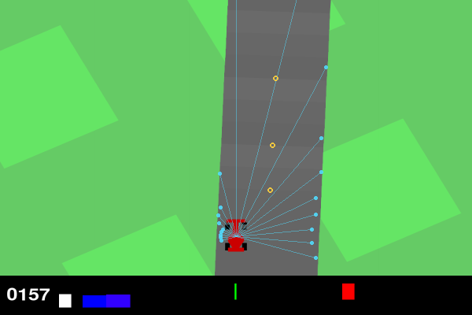

How it sees
The car never sees pixels. Every frame (50 per second) it gets 49 numbers, computed from the simulator's own state, and answers with 2 numbers: steering (−1 left … +1 right) and a pedal (+ gas, − brake).

The 49 inputs
| # | Input | What it tells the driver | Scale |
|---|---|---|---|
| 0-2 | speed, forward and sideways velocity | how fast, and whether the car is sliding sideways (drifting) | /60 |
| 3 | yaw rate | how fast the car is turning (a spin shows up here first) | /3 |
| 4 | front-wheel steer angle | where the wheels point now (steering is not instant) | /0.4 rad |
| 5-8 | each wheel on road (1) or grass (0) | grass has much less grip | 0/1 |
| 9-10 | front and rear wheel rim speed | wheel spin when it accelerates, locked wheels when it brakes | /60 |
| 11 | distance from the centre line | + left, − right; ±1 is the road edge | /6.7 |
| 12-13 | heading error (sin, cos) | the angle between the car's nose and the road's direction | −1…1 |
| 14-29 | 8 centre-line points 2, 4, 7, 11, 16, 22, 30, 40 tiles ahead | the shape of the next ~140 m of road, in the car's own frame (forward, left) | /60 |
| 30-48 | 19 lidar rays over ±108° | how far the road goes in each direction (1 = 60 m or more) | /60 |
Before the network sees them, each input is standardised with a running mean and spread measured during training (saved inside every checkpoint), and clipped to ±10.
The numbers at that frame
What it is not allowed to see
- No future: everything comes from the car's own state and the road map at this instant. The centre line ahead is what a driver who knows the circuit would know; it is the same information the road pixels would show, without having to learn vision.
- No score, no tile counter, no timer, no track seed.
- Training never uses the 16 validation tracks, the 10 Play tracks or the 100 goal tracks; it drives fresh random tracks.
What was wrong before (v1)
The v1 agent (December 2025) had 8 numbers plus 32 lidar rays, but every ray read 0, always.
The ray cast asked "is this point on a road tile?" by looking for polygons in env.road, which holds Box2D bodies,
not polygons, so the answer was always "no". Its "traction" input read 1 at all times (wheels have no
ground_contact; they keep a set of the tiles they touch). So it drove on speed and compass heading alone,
which is why it never learned to follow the road. A test now checks the rays see the road on the start line
(tests/test_lidar.py), and that the fast numba lidar answers exactly like the pure-Python reference.